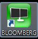

Start¶
0. Notation¶
In this manual, I will use braket notation < and > as a keyboard button. So, for example, challenges
Ctrl: Press Control key of your keyboard.Equity↵: Type “Equity” and press “ENTER” putton.Alt + Delete: Press Alt key and Delete key simulataneously.
You can see detail Bloomberg Keyboard features in here.
1. Log In¶
Click the Bloomberg Icon at the desktop
and press ENTER, then type ID and PW.
Congratulation! Now you are ready to use Bloomberg!
You can swipe windows using Alt+1, Alt+2, Alt+3, Alt+4.
2. Tickers¶
You can search any company by it’s Bloomberg Tickers like,
TSCO LN Equity↵: Tesco PLC in London Stock Exchange.SBRY LN Equity↵: J Sainsbury PLC in London Stock Exchange.005930 KS Equity↵: Samsung Electronics Co Ltd
3. Search & Command¶
You type on the ‘command line’, and it will give options via Drop Down Menus, Links, Function Keys
followed by the ENTER key.
| Function | Explain |
|---|---|
| MAIN | Main Menu |
| DES | Security Description |
| RV | Relative Valuation |
| FA | Financial Analysis |
| CN | Company News |
| MGMT | Company Management |
and so on. For more information, click here.
4. Export¶
If you find the data, you can export by clicking icon to excel, clipboard or image whatever you want.
5. More Information¶
If you need more information, see Bloomberg GETTING STARTED GUIDE (2012)